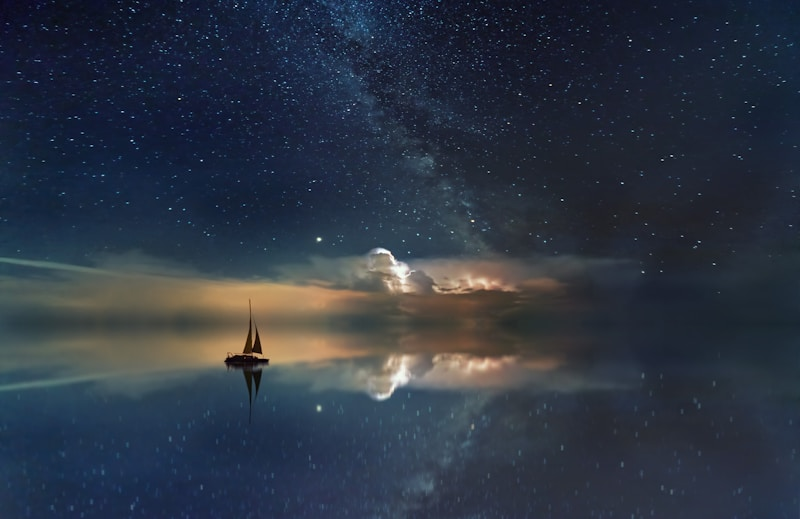
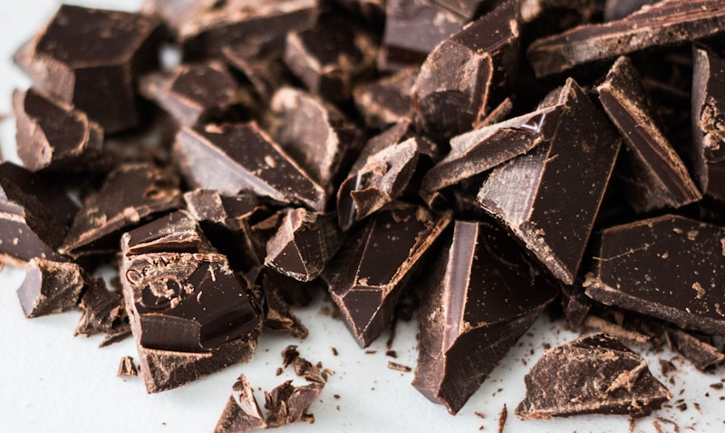
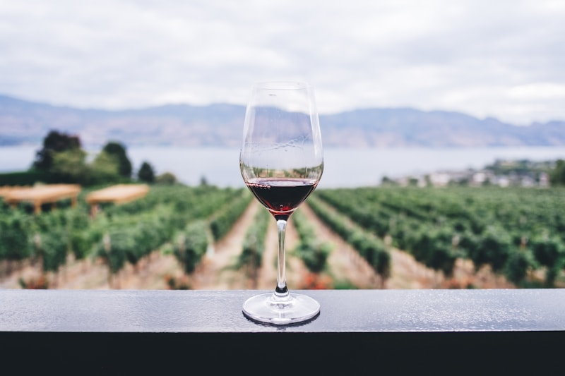
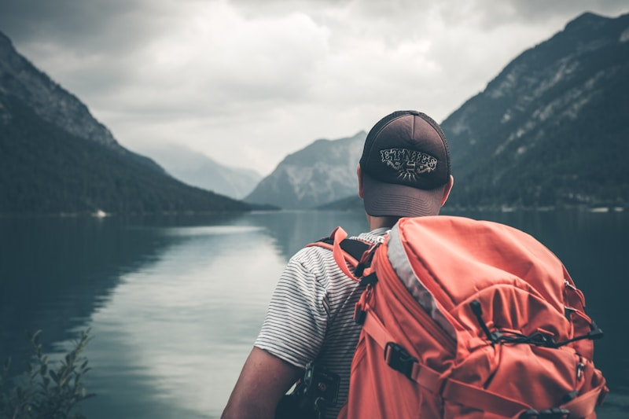
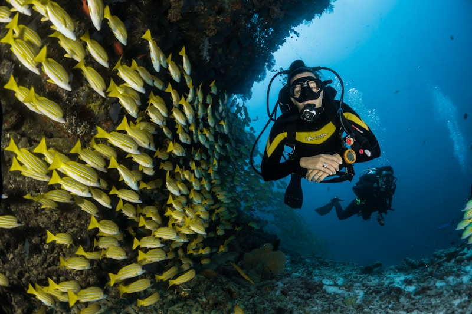
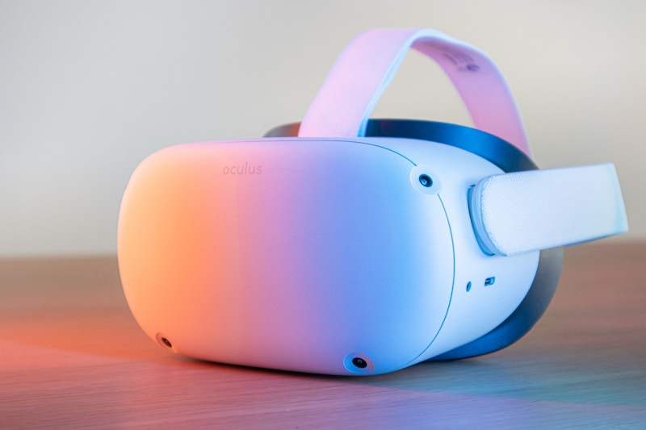
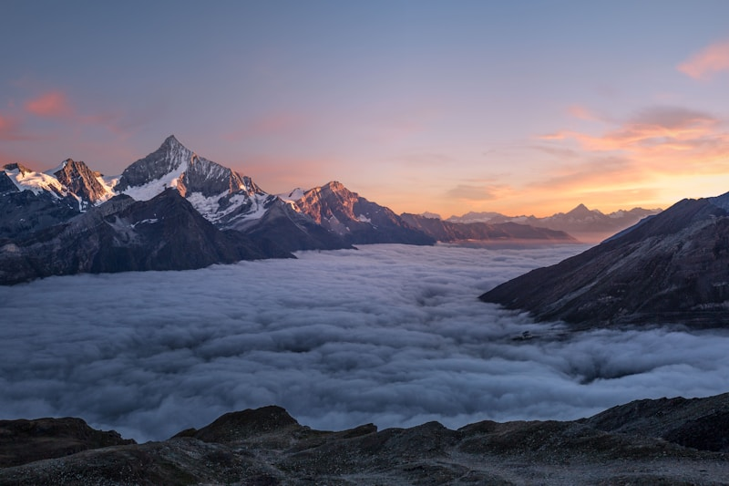

About Interlaken
Nestled between Lake Thun and Lake Brienz in the heart of the Swiss Alps, Interlaken is known as the adventure capital of Switzerland. With its stunning mountain scenery, crystal-clear lakes, and endless outdoor activities, it's the perfect destination for our family with varied interests.
We've created personalized "Top 5" lists for each family member based on their specific interests. Scroll down to find activities tailored just for you!
1. Harder Kulm Trail & Viewpoint

This moderate 4 km trail starts from Interlaken Ost and leads to a spectacular viewpoint offering panoramic views of Interlaken and the surrounding lakes. The hike takes about 1.5 hours each way through beautiful forest terrain with increasingly stunning views as you ascend.
At the top, you'll find the "Two Lakes Bridge" viewing platform extending out over the edge, providing unobstructed views of Lake Thun, Lake Brienz, and the mountains beyond including Eiger, Mönch, and Jungfrau.
Difficulty: Moderate
Duration: 3 hours round trip (hiking)
Alternative: Funicular railway available if you prefer not to hike
Tip: Go early in the morning for the best light and fewer crowds. The Harder Kulm restaurant at the top offers traditional Swiss cuisine with incredible views.
2. Schynige Platte Alpine Garden & Hiking Trail

Take the historic cogwheel train from Wilderswil to Schynige Platte (2,076m) for access to some of the region's most spectacular hiking trails and the oldest Alpine garden in Switzerland, featuring over 600 plant species.
The Panorama Trail offers breathtaking views of the Eiger, Mönch, and Jungfrau mountains, as well as both lakes. The well-maintained paths make this accessible for hikers of various abilities, with options ranging from 1-4 hours.
Train: Historic cogwheel railway from Wilderswil (25 min from Interlaken)
Operating: Late May to late October (perfect for our June visit)
Highlights: Alpine garden, panoramic mountain views, traditional mountain restaurant
Tip: The first train up is usually less crowded. Bring layers as the weather can change quickly at this elevation.
3. Niederhorn Hiking Trails

The Niederhorn mountain offers some of the most accessible yet rewarding hiking in the region. Take the cable car from Beatenberg to the summit at 1,950m, where several well-marked trails begin with spectacular views of Lake Thun and the surrounding Alps.
The Gemmenalphorn loop trail is particularly recommended, offering ridge walking with panoramic views and a good chance to spot local wildlife including ibex and marmots.
Access: Cable car from Beatenberg (15 min bus from Interlaken)
Trail Options: Various difficulties from easy 1-hour walks to challenging full-day hikes
Wildlife: Good opportunity to spot Alpine wildlife
Tip: The early morning offers the best chance to see wildlife and enjoy clear views before any afternoon clouds roll in.
4. Interlaken's Old Town & Monastery
Explore the charming streets of Interlaken's historic center, where you can find well-preserved buildings dating back several centuries. The Interlaken Monastery and Castle, dating back to 1133, offers a fascinating glimpse into the town's medieval past.
The monastery complex includes beautiful gardens, historic architecture, and exhibits on local history. Nearby, you can stroll along the Aare River and enjoy the peaceful atmosphere away from the more touristy areas of town.
Location: Central Interlaken, easily walkable
Highlights: 12th-century monastery, historic buildings, Aare River promenade
Duration: 2-3 hours at a leisurely pace
Tip: Visit the Japanese Garden within the monastery grounds for a peaceful retreat, and don't miss the small museum with exhibits on local history.
5. St. Beatus Caves & Waterfall

Located on the shores of Lake Thun, the St. Beatus Caves offer a fascinating journey through a kilometer-long cave system with impressive stalactites, stalagmites, underground streams, and chambers. According to legend, a dragon once lived here before being driven out by the Irish monk St. Beatus.
The site also features a spectacular waterfall cascading down the cliff face at the cave entrance, and the hiking trail to reach the caves offers stunning views over Lake Thun.
Location: 15 minutes from Interlaken by car or bus
Open: Mid-March to late October (perfect for our June visit)
Duration: 1-hour cave tour plus time for the museum and restaurant
Tip: Combine with a boat trip on Lake Thun for a perfect day out. The caves maintain a constant cool temperature of about 8-10°C, so bring a light jacket even in summer.
1. Funky Chocolate Club Workshop

Indulge in a hands-on chocolate-making workshop at the Funky Chocolate Club, where you'll create your own chocolate masterpieces under the guidance of experienced chocolatiers. Learn about the bean-to-bar process and the special characteristics of Swiss chocolate.
The 75-minute workshop includes all materials and packaging to take your creations home. You'll also get to taste various premium Swiss chocolates and learn about their unique flavor profiles.
Location: Jungfraustrasse 35, central Interlaken
Duration: 75 minutes
Booking: Advance reservation recommended
Tip: The shop also sells unique chocolate creations with local ingredients like Alpine herbs and Swiss mountain salt. Perfect for gifts to bring home!
2. Interlaken Wine Experience at Chalet Beatus

Discover Swiss wines at this intimate tasting experience in a traditional Swiss chalet overlooking Lake Thun. Switzerland keeps 98% of its wine production within its borders, making this a rare opportunity to taste wines you won't find elsewhere.
The guided tasting includes 6 premium Swiss wines paired with local cheeses and charcuterie. You'll learn about the unique Alpine terroir and the traditional and modern winemaking techniques used in Switzerland's diverse wine regions.
Location: Chalet Beatus, 10-minute drive from central Interlaken
Duration: 2 hours
Includes: 6 wine tastings, cheese and charcuterie pairings, expert guide
Tip: Swiss Chasselas white wine and Pinot Noir are specialties worth trying. The host can arrange shipping for any bottles you'd like to purchase.
3. Habkern Artisan Village Tour

Visit the charming mountain village of Habkern, just 15 minutes from Interlaken, known for its preservation of traditional Swiss crafts. The village is famous for its Alphorn makers, wood carvers, and traditional textile artisans.
The guided tour takes you to several workshops where you can watch artisans at work and learn about techniques passed down through generations. Many offer unique handmade items that make perfect authentic souvenirs.
Location: Habkern village, 15-minute drive from Interlaken
Duration: Half-day tour
Highlights: Alphorn workshop, wood carving demonstrations, traditional textiles
Tip: The village's specialty is hand-carved wooden items using traditional patterns. These make unique souvenirs you won't find in typical tourist shops.
4. Höheweg Shopping Promenade

Interlaken's main shopping street, Höheweg, offers a delightful mix of luxury boutiques, watch shops, souvenir stores, and chocolate shops, all with the stunning backdrop of the Jungfrau mountain. The wide, tree-lined boulevard is perfect for a leisurely shopping experience.
Notable stops include Bucherer for Swiss watches, Läderach for premium chocolates, and various boutiques offering Swiss-made products from pocket knives to fine textiles and mountain gear.
Location: Central Interlaken
Shopping Hours: Most shops open 9am-6:30pm (shorter hours on Sundays)
Highlights: Swiss watches, chocolates, textiles, and outdoor gear
Tip: For tax-free shopping, ask for a Global Blue tax refund form for purchases over 300 CHF. The forms can be processed at the airport when leaving Switzerland.
5. Brienz Woodcarving Museum & Workshops

The picturesque village of Brienz, just a 20-minute train ride from Interlaken, has been the center of Swiss woodcarving tradition since the 19th century. The Woodcarving Museum showcases exquisite pieces from simple household items to elaborate artistic sculptures.
After touring the museum, you can visit the connected School of Woodcarving workshops where current students and masters demonstrate their craft. The village also features numerous woodcarving shops where you can purchase authentic pieces directly from artisans.
Location: Brienz, 20 minutes from Interlaken by train
Museum Hours: 10am-5pm, Tuesday-Saturday (May-October)
Workshops: Demonstrations available most weekdays
Tip: The specialty of the region is the Brienz Bear, a traditional carved wooden bear in various poses. These make excellent authentic souvenirs with real cultural significance.
1. Paragliding Over Interlaken

Experience the ultimate adrenaline rush with a tandem paragliding flight over Interlaken, offering breathtaking aerial views of Lake Brienz, Lake Thun, and the surrounding Alps. Launch from either Beatenberg or Harder Kulm and soar like a bird for 15-20 minutes.
No experience is necessary as you'll fly with a certified instructor who handles all the technical aspects while you enjoy the ride. Many pilots offer aerobatic maneuvers for those seeking extra thrills.
Duration: 15-20 minutes flight time (2 hours total with preparation)
Requirements: Weight between 20-110kg, reasonable fitness level
Best Time: Morning flights often have the best conditions
Tip: Book early in your trip so you have flexibility to reschedule if weather conditions aren't ideal. Most companies offer GoPro video and photo packages for an additional fee.
2. Canyoning in Grimsel or Chli Schliere

Canyoning combines hiking, climbing, jumping, and swimming as you navigate through narrow gorges carved by mountain streams. The Interlaken region offers several world-class canyoning locations for different experience levels.
Grimsel Canyon offers bigger jumps and slides for the more adventurous, while Chli Schliere provides a great introduction to the sport with moderate challenges. Both feature crystal-clear mountain water, natural water slides, and jumps into deep pools.
Duration: Half-day (4-5 hours including transportation and preparation)
Includes: All necessary equipment, professional guides, transportation
Requirements: Swimming ability, reasonable fitness level
Tip: Wear swimwear under your clothes and bring a towel and change of clothes. The water is refreshingly cool even in summer!
3. Alpine Cheese Trail & Tasting Experience

Discover the art of traditional Swiss cheese-making at a working Alpine dairy. This experience combines a moderate hike through Alpine meadows with visits to mountain huts where cheese is still made using centuries-old methods.
You'll learn about the entire process from milking to aging, and sample various mountain cheeses at different stages of maturation. The experience includes a hearty lunch featuring raclette or fondue made with the dairy's own cheese.
Location: Isenfluh-Sulwald area, 20 minutes from Interlaken
Duration: 6 hours including lunch
Difficulty: Moderate hiking (about 8km with 300m elevation gain)
Tip: Try Alpkäse (Alpine cheese) made in summer when cows graze on herb-rich mountain pastures, giving the cheese distinctive flavors you won't find in valley-produced varieties.
4. White Water Rafting on Lütschine River

Navigate the thrilling rapids of the Lütschine River as it carries glacier meltwater from the mountains around Grindelwald and Lauterbrunnen down to Lake Brienz. This exhilarating white water rafting adventure offers Class III-IV rapids surrounded by spectacular Alpine scenery.
Professional guides ensure safety while maximizing the excitement as you paddle through churning white water, waves, and drops. The Lütschine is known for its crystal-clear turquoise water and the stunning backdrop of snow-capped mountains.
Duration: 3-4 hours (including preparation and transportation)
Season: May to September (peak flow in June with snowmelt)
Requirements: Swimming ability, minimum age 14-16 depending on water levels
Tip: June is an excellent time for rafting as the snowmelt creates higher water levels and more exciting rapids. Wear quick-drying clothes under the provided wetsuit.
5. Rösti & Raclette Cooking Workshop

Learn to prepare authentic Swiss cuisine in this hands-on cooking workshop focused on traditional Alpine specialties. Under the guidance of a local chef, you'll master classics like rösti (crispy potato pancake), raclette (melted cheese served with potatoes and pickles), and älplermagronen (Alpine macaroni with cheese, potatoes, and caramelized onions).
The class takes place in a traditional Swiss chalet kitchen and concludes with a feast of your creations paired with local wines or craft beers. You'll receive recipe cards to recreate these dishes at home.
Location: Matten bei Interlaken, 5 minutes from central Interlaken
Duration: 3 hours including dining time
Group Size: Small groups of 4-8 participants
Tip: Ask about regional variations of these dishes. Each valley in Switzerland has its own twist on these classics, using local cheeses and ingredients specific to their area.
1. E-Scooter Tour Around Lake Brienz

Explore the stunning shores of Lake Brienz on an electric scooter tour that combines technology with natural beauty. These powerful yet easy-to-ride e-scooters allow you to cover significant distances without physical exertion, making it perfect for enjoying scenic views without hiking.
The guided tour follows a mostly flat route along the turquoise waters of Lake Brienz, passing through picturesque villages, waterfall viewpoints, and scenic photo spots. Stops are made at key locations for photos and refreshments.
Duration: 3 hours
Distance: Approximately 25km
Requirements: Minimum age 16, valid ID
Tip: The e-scooters have different power modes, so you can adjust the assistance level based on your comfort. The tour includes a stop at the famous Giessbach Falls, which is spectacular in June with peak snowmelt.
2. Jungfrau Park VR Experience

Experience the thrill of the Swiss Alps without the physical demands at Jungfrau Park's cutting-edge VR center. Using the latest virtual reality technology, you can "climb" the Eiger, "paraglide" over Interlaken, or "ski" down pristine slopes—all while staying safely indoors.
The park features multiple VR stations with different Alpine experiences, from adrenaline-pumping adventures to peaceful scenic tours. The hyper-realistic simulations include wind effects, motion platforms, and 4K visuals for a truly immersive experience.
Location: Jungfrau Park, Interlaken
Hours: 10am-6pm daily (May-October)
Experience Options: Multiple VR adventures available with various intensity levels
Tip: The "Scenic Switzerland" VR tour is perfect for those who want to experience the views without intense action. It takes you to places that would normally require challenging hikes.
3. Harder Kulm Funicular & Panorama Restaurant

Enjoy spectacular mountain views without the hike by taking the Harder Kulm funicular railway to Interlaken's local mountain. The modern cable car whisks you up to 1,322 meters in just 10 minutes, where you'll find the "Two Lakes Bridge" viewing platform with panoramic views of Lake Thun, Lake Brienz, and the Eiger, Mönch, and Jungfrau mountains.
At the top, relax at the Panorama Restaurant in a building designed like a Swiss castle, where you can enjoy traditional Swiss cuisine while taking in the breathtaking views through floor-to-ceiling windows.
Operating Hours: 9:30am-9:30pm (April-October)
Journey Time: 10 minutes each way
Facilities: Restaurant, viewing platform, souvenir shop
Tip: Consider going up for sunset and dinner when the mountains are bathed in golden light. The last descent is usually around 9:40pm in summer, giving you plenty of time to enjoy the evening views.
4. Swiss Chocolate & Ice Cream Tech Tour
Discover the fascinating intersection of traditional Swiss chocolate-making and modern technology at this unique tour that showcases how cutting-edge techniques are revolutionizing Switzerland's most famous culinary art. The experience includes demonstrations of 3D chocolate printing, molecular gastronomy techniques, and robot-assisted production.
The tour concludes with a tasting session featuring innovative chocolate and ice cream creations like nitrogen-frozen ice cream with unusual flavor combinations and texturally complex chocolate confections created using the latest food tech.
Location: Schuh Chocolate Studio, central Interlaken
Duration: 90 minutes
Includes: Guided tour, demonstrations, tastings
Tip: The studio's signature creation is a 3D-printed chocolate map of the Jungfrau region that you can customize with your favorite hiking routes or places you've visited.
5. Boat Cruise on Lake Thun with Dinner

Enjoy the spectacular Alpine scenery surrounding Lake Thun from the comfort of a modern cruise boat. The evening dinner cruise is particularly recommended, offering a relaxing way to take in the mountain panorama while enjoying a gourmet meal featuring local specialties.
The route passes picturesque lakeside villages, medieval castles, and offers unparalleled views of the Bernese Alps. The boat features both indoor dining areas with panoramic windows and outdoor viewing decks perfect for photography.
Departure: Interlaken West boat dock
Duration: 2.5 hours
Dinner Cruise: Available Tuesday, Thursday, and Saturday evenings in summer
Tip: Request a window table when booking for the best views. The sunset dinner cruise offers spectacular lighting for photography as the mountains are illuminated with golden and pink hues.